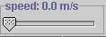
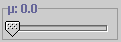
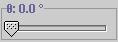
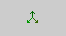
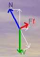
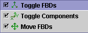
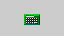
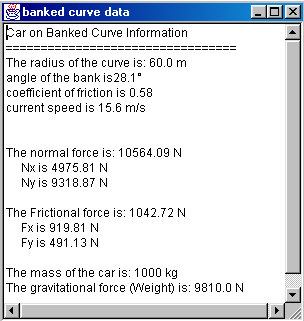
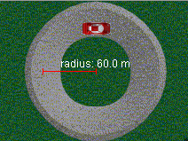

|

|
Adjust this slide control to change the velocity of the car. If you double-click on this control, a text box pops up into which you can enter any velocity between 0 m/s and 50 m/s. |
|

|
This slide-control allows you to set the coefficient of static friction. Double click to type in a desired value for m. |
|

|
The bank angle of the road is set using this slide-control. Again, double click on the control to type in a desired value. |
| Play/Pause: Press this to begin the motion. You can adjust any of the values in the input panel while the car is in motion. If, however, the car goes into a skid the applet will stop and reset the position of the car. The last used input values will be retained. You can pause at any time by pressing . | ||||
|
Reset: This completely resets the applet and sets all input values to zero. |
||||
|

|
Free Body Diagram:
Pressing this button opens up a FreeBodyDiagram (FBD) dialogue box.
This gives you a number of options that will allow you to see a FreeBody
Diagram for the car on the road, display components of the forces drawn
and reposition to FBD anywhere on the drawing panel. The FBD, once drawn, is "active" - it will change in response to varying input values. |
 | ||
|

|
Show Calculations:
Pressing this opens a pop-up window containing calculations
of forces, components and other items relevant to this applet. |
|||
|
|
Image: This
button allows the user to "turnoff" the background image and
replace it with a simple line-drawing.
|
|||
|  |
The radius of the turn can be adjusted by "grabbing" the outer tip of the red radius line and dragging outward (increase) or inward (decrease), toward the center of the turn. The radius will change in steps of 1 m. |